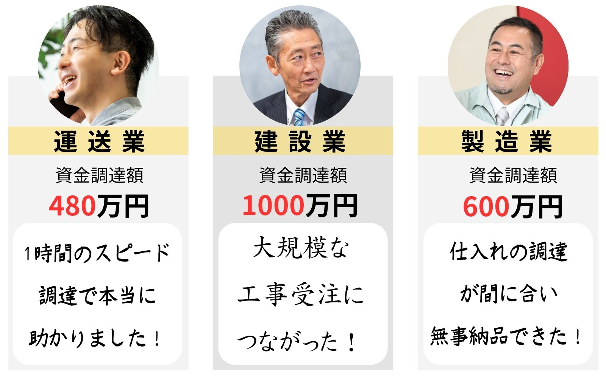

資金繰りに悩む、中小企業経営者必見！
【PR】
最近、資金繰りが厳しい企業が増えているのは
ご存じでしょうか？
売上の減少に加えて、外注費・人件費・経費の高騰で
資金繰りが、より厳しくなっています
資金調達しようにも、すでに目一杯まで「借入」をしているため
これ以上の融資が受けられない…
※参考 https://www.freee.co.jp/financing/contents/01/
その結果…
これらの悪循環で、倒産する企業も増加傾向とか…
「もっと早くに入金されればなぁ」
経営者なら誰しも1度は思ったこともあるはず！
そこで！
今、注目を浴びている資金調達方法の一つが
「ファクタリングサービス」
なんです。
ファクタリングとは？
企業が保有する「売掛金・売掛債権」を
ファクタリング会社が買い取りをするサービスです。
売掛金が通常の入金予定日よりも前に
ファクタリング会社から入金されるので
入金サイクルを大幅に短縮できます！
即日入金されるので、急なトラブルにも対応できる
うれしい資金調達方法なんです！
このように入金スピードの速さや
赤字・税金滞納という状況でも利用可能という点です。
また信用情報に影響しない点も特徴です。
などメリットが多数あるのです！
実は、経済産業省中小企業庁が売掛債権を使った
資金調達の利用を促進しています。
少額からでもすぐに資金調達ができる点で
中小企業を中心に広まりつつあるんです。
※参考：売掛債権の利用促進について
https://www.chusho.meti.go.jp/kinyu/2004/download/040203urisai_panhu2.pdf
1日換算だと約136件と、年々規模も大きくなってきております。
などがあげられます。
と全国で多数の実績をいただいております。まずはお気軽にお問合せください。
▼ご利用者様事例（一部）
最近は社会情勢の変化も大きく、売掛金入金の遅延や
資金繰りのトラブルがあるかもわかりません。
資金繰りの余裕＝心の余裕にもつながります。
↓最短30分～ で入金可能↓